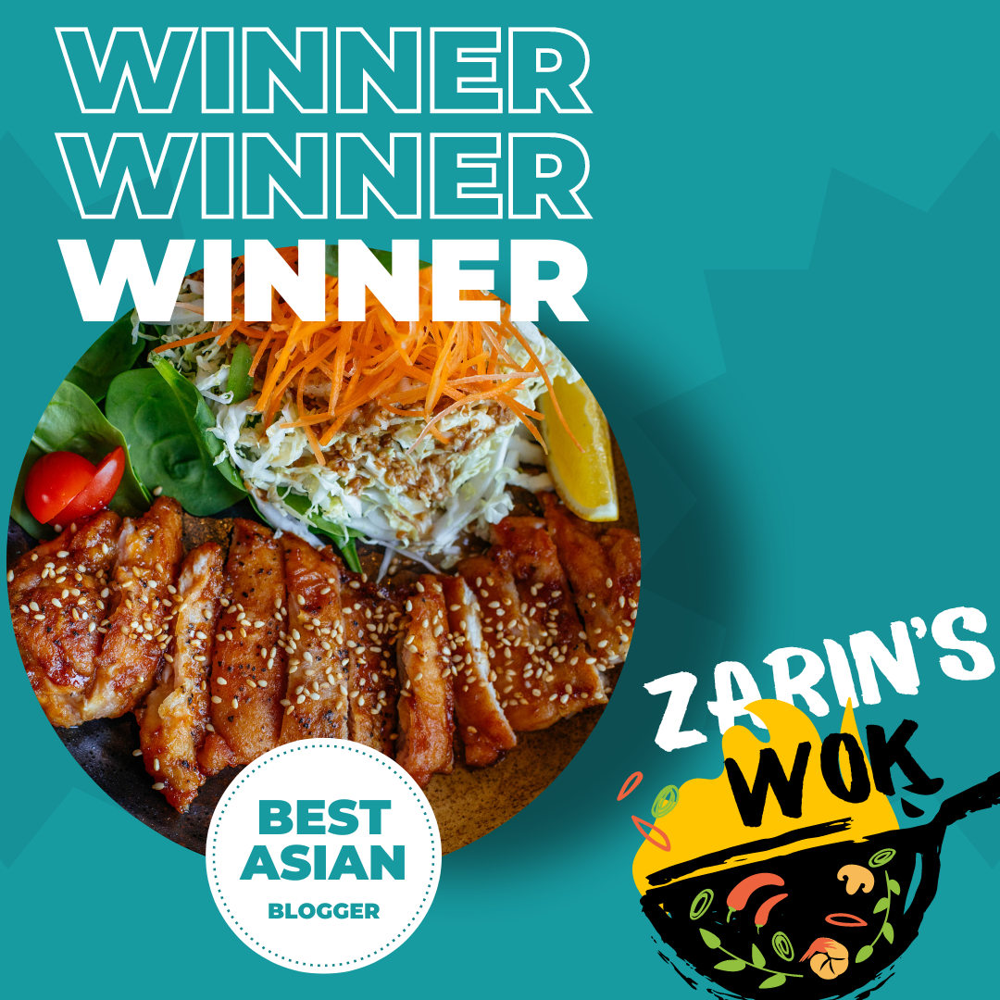

As a girl who loves cooking, I find joy and fulfillment in creating delicious meals that bring people together.
I have always been fascinated by the art and science of cooking, and I enjoy experimenting with different ingredients and flavors to create new and exciting dishes.
Whether it's baking a decadent cake or simmering a savory stew, I love the process of cooking and the way it engages all of the senses.
Cooking has always been a way for me to express my creativity and connect with others. I enjoy sharing my culinary creations with friends and family, and I love seeing the joy and satisfaction on their faces when they taste something I've made. I believe that food has the power to bring people together, and that a shared meal can create memories and foster deep connections.
In my free time, you can often find me scouring cookbooks and food blogs for new recipe ideas, or experimenting in the kitchen with a new ingredient or technique. I am constantly learning and growing as a cook, and I believe that there is always something new and exciting to discover in the world of food.
Overall, cooking is more than just a hobby for me - it's a passion and a way of life. I believe that food has the power to nourish both the body and the soul, and I feel lucky to have the opportunity to share my love of cooking with others.
My Awards
I was recognized for my hobby cooking recipes a couple of times

Awarded by the local hobby cooking organization in 2018, I topped the participants in a fierce competition.
Awarded by the local hobby cooking organization in 2018, I topped the participants in a fierce competition.